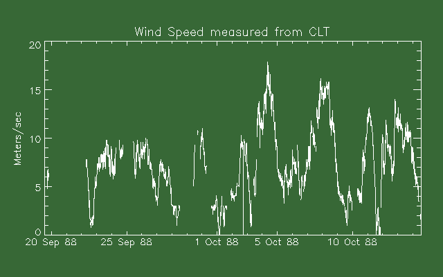
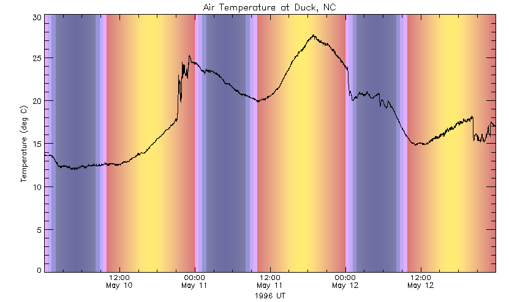
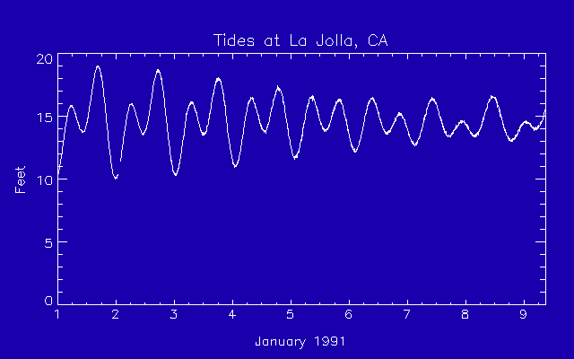
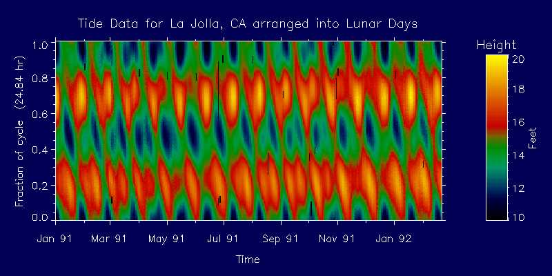

Plotting time series data
Time series data plots show how values vary through time over some interval. Often these values are scalars, like temperature, or the components of a vector, like wind speed and direction. In some cases the actual time is unimportant, for example, what is the velocity of a cannon ball dropped from a tower? But for other cases actual time is very important, such as what was the wind speed throughout the day on 21 July, 1992 at a certain place?The JHU/APL/S1R library routine jsplot may be used to plot time series data when a time axis is desired. Ordinary plot axes are surprisingly complex, time axes are even more complex for several reasons. The labeled tick marks must be selected carefully to be useful. This is complicated because of the mixture of units: seconds, minutes, hours, days, months, and years. The lengths of months vary from each other and leap years add to the interest. Evenly spaced tick marks are not the best if more than one month is involved, it's better to make their positions depend on the month boundaries. The routine jsplot handles the time axes and also the problem of missing data: there may be times for which no data is available between times with data. All the normal plot options, such as color, character size, linestyle, plot symbols, and so on are also handled by jsplot (requires a version of IDL supporting the special keyword _EXTRA). An added problem that jsplot must deal with is that IDL does not handle double precision data in its plots, it is internally converted to floating point. To see this try the following:
x = findgen(1000) ; Make an x array. y = (x/1000)^2 ; Make a y array. plot,x,y ; Plot. No problem. plot,x+1d8,y ; Add an offset. Plot is corrupted. plot,x+1d9,y ; Even worse.jsplot takes as the x array an array of Julian Seconds which are double precision values and typically not close to 0. Trying to directly plot a value against time in Julian Seconds gives a corrupted plot as explained. The solution is simple, offset the times to start at 0:plot,js-js(0),ywhich is what jsplot does internally while keeping track of the offset. This internal offset may be returned through the keyword OFFSET and used to do additional overplots:jsplot, js, y, offset=off ; Make a time series plot. ver, js(9)-off ; Plot vertical line for js(9). The built-in help for jsplot is: Make a time series plot with time in Julian Seconds. jsplot, js, y js = Time array in Julian Seconds. in y = Data to be plotted. in Keywords: GAP=gs Gap in seconds. This or greater time difference will cause a break in the curve. If a plot symbol is desired use a negative psym number to connect pts. CCOLOR=cc Curve and symbol color (def=same as axes). XTITLE=txt Time axis title text. XTICKLEN=xtl Time axis tick length (fraction of plot). XTICKS=n Suggested number of time axis ticks. The actual number of tick marks may be quite different. FORMAT=fmt Set date/time format (see timeaxis,/help). LABELOFF=off Adjust label position (see timeaxis,/help). MAJOR=mjr Major grid linestyle. MINOR=mnr Minor grid linestyle. TRANGE=[js1,js2] Specified time range in JS. OFF=off Returned JS of plot min time. Use to plot times in JS: VER, js(0)-off. /OVER Make overplot. oplot,js-off,y also works but will not handle any gaps. Any plot keywords will be passed on to the plot call. Following related to background sun colors: /SUN display day/night/twilight as background colors. COLOR=clr Plot color (set to black by /SUN). LONG=lng, LAT=lat = observer location for sun colors. ZONE=hrs Hours ahead of GMT (def=0). Ex: zone=-4 for EDT. Notes: Julian seconds are seconds after 0:00 1 Jan 2000. See also dt_tm_tojs(), dt_tm_fromjs(), ymds2js(), js2ymds.A few notes may be useful. The keyword XTICKS may be used to control how many tick marks appear on the time axes. The way this keyword works is not the same as for ordinary IDL plots where it specifies exactly how many ticks to use. In jsplot XTICKS is a suggestion, not an exact number. Since tick mark spacing may not even be constant on a time axis an exact number of tick marks is not as reasonable. jsplot trys to pick good tick marks that fit in with the time period covered by the axis and takes the desired number of tick marks into account.
The time axis tick mark labels may be formatted as described in the section formatting date/time strings above. Time axis tick labels may have more than one line. This is done by adding a carriage return character between lines. For example, try the following:
js1=dt_tm_tojs('1992 july 28') ; Make a time range. js2=dt_tm_tojs('1992 aug 3') js=maken(js1,js2,200) y=makey(200) ; Make up some data. jsplot,js,y ; Default time plot. jsplot,js,y,form='n$ d$' ; Add better labels. jsplot,js,y,chars=2,form='n$ d$' ; Bigger labels. jsplot,js,y,chars=2,form='n$@d$' ; Two line labels.As mentioned in the help text, using jsplot with /OVER to overplot another curve will allow gaps to be handled using the GAP keyword. The GAP keyword may be used to specify that any gaps longer than that length will give a break in the plotted curve. A minimum gap size is specified in seconds.
An example time series plot was made using the following IDL statement:
jsplot,js,ws,max=20,gap=1800,yran=[0,20],pos=[.1,.15,.95,.85],$ ytitle='Meters/sec',titl='Wind Speed measured from CLT',$ charsize=1.4, back=50Showing the diurnal cycle
For some time series data it is useful to have an idea of the time of day. This is true for some meteorological data which is effected by the sun's warming. The keyword /SUN will add background colors to the plot showing the sun's altitude above the horizon. This is especially useful if the time axis is not local time but something like UT. When using the /SUN keyword both LAT=lat and LONG=lng are also required. Here is an example call using these keywords:jsplot,js,temp,/sun,lat=36.17,long=-75.76,form='h$:m$@n$ d$',$ title=tt,xtitle=tx,ytitle=ty,charsize=1.2This data was collected at the ocean end of a U.S. Army Corps of Engineer's research pier on a field test in May, 1996. The pier extended 1500 feet beyond the water's edge and the conditions could vary very quickly as the wind shifted from land to sea and back. The daily cycle is shown by the background colors. Local sunset was at about 8 pm EDT, which is 0:00 UT. The thin red line shows sun rise or set. The 3 bands, pink, blue, and darker blue, show civil, nautical, and astronomical twilights (-6, -12, -18 degree sun altitudes). Night is shown by deeper shades of blue and day by shades of orange and yellow. A daily temperature cycle is partly hidden by the rapidly varying conditions. Using the /SUN option slows plot generation down by an amount proportional to the time period covered. Periods much longer than a week may be somewhat slow but this option is not very useful for long time periods anyway.
(This option will be available on the next library update after the Jan 1996 update)
Displaying time series image data
For scalar data an ordinary time series plot works ok. For vector data, such as wind speed and direction, two time series plots can be used to show the data. An alternate way to display a vector time series is to plot a series of line segments representing the vector but displaced along a time axis. This has problems if the vector is oriented along the time axis. For higher order data, such as a spectrum it makes sense to display the data as an image. For a spectrum the independent variable is frequency and the dependent might be something like power. To display a time series of spectra let time vary along the x axis, frequency along the y and let power be indicated by the image value (color). Such a time series image may be displayed using the routine izoom which is described next.The JHU/APL/S1R library routine izoom displays images with labeled x and y axes. This routine displays a 2-d array z which has been scaled for the display. Let array z be nx ny. Also required is a 1-d array x which has nx values which are the x coordinates of every column in z, and a 1-d array y which has ny values which are the y coordinates of every row in z. One special case takes the x array as Julian Seconds and displays a time axis. The built-in help for izoom is:
Zoom an image and display with labeled axes. izoom, x, y, z x = 1-d array of x coordinates for every column in z. in y = 1-d array of y coordinates for every row in z. in z = 2-d byte scaled image array. in Keywords: XRANGE=xran X range to zoom. (def=all). YRANGE=yran Y range to zoom. (def=all). Out of range values are clipped to the valid range. /INTERP means do bilinear interpolation (else pixel rep). /JS means x is time in Julian Seconds (seconds after 2000 Jan 1 0:00). Gives a date/time axis. OFFSET=off returned time offset when used with /JS. Same as for jsplot. Any other keywords are passed on to the plot call used to display the axes (like TITLE, CHARSIZE, POSITION, ...). Notes: By default entire image is displayed. XRANGE and YRANGE display a subset of the image. An example use might be: x=array of longitudes, y=array of latitudes, z=array of scaled elevations. May use movbox to return the data ranges of a selected area, then call izoom to zoom it: movbox,ix,iy,dx,dy,xran=xran,yran=yran,/noerase izoom,x,y,z,xran=xran,yran=yranIf x is time in Julian Seconds use the /JS keyword in izoom. A subsection of the image is easily zoomed up to fill the plot using the keywords XRANGE and YRANGE. An example result from izoom is shown in the next section.
Dealing with periodic data
Some time series data is periodic in nature or has components of one or more periods. Sometimes such data may be usefully displayed compactly as an image if it is arranged properly. An clean example of such data is tide height data for La Jolla, CA. An ordinary time series plot of a small part of the data in hand is shown in the next plot, made by the following statement:jsplot, js(0:2000),tide(0:2000)/100.,gap=1000,pos=[.1,.15,.95,.85], $ ytitle='Feet',title='Tides at La Jolla, CA', charsize=1.5, $ form='d$',xtitle='January 1991'For this plot the month and year were factored out of the time labels and placed in the x axis title. The format used for the time labels was simply d$, the month day.
If the tide height data are rearranged into a 2-d array where each column of the array covers one period of some cycle it may show the data in a new light. There are a number of periods that occur in tide data, the two dominant ones are the solar period of 12.00 hours, and even more important, the lunar period of 12.42 hours. The following image shows the data arranged into lunar days of 24.84 hours each.

In the above image brightness represents height of the water. The dominant feature of the image is the modulated horizontal banding which are the lunar tides. For this location two high tides occur every lunar day of 24.84 hours. A vertical cut through the image shows that often the heights of the two high tides differ. Also very noticeable are the diagonal bands. Note that they diagonally cross the image with a horizontal period close to one month. These are due to the solar tides which have a period of 12.00 hours. The image was arranged for a period of 24.84 hours, any other period will appear as diagonal features in the image. Because the moon's orbital period around the earth is about one month the solar tides and lunar tides come in and out of phase with this same period. The small black marks are missing data due to tape recorder tape changes. Such missing data have no effect on building the cycle/phase image and, unless they are severe, they have little effect on interpreting the resulting image.
The cycle/phase image was constructed using the JHU/APL/S1R library routine cyph. The built-in help for cyph is:
Construct a cycle/phase array from time series data. cyph, data, time data = time series data. in time = time tag of each data point. in Keywords: CPOUT=z Returned reformatted data image. TOUT=t Returned time for bottom line image. OFFSET=frac Given starting offset into data as fraction of time slice size (def=0). SLICE=dx Given slice size in samples (may be fractional).Time does not have to be in Julian Seconds and may be nothing more than an index number. The desired period is entered using the keyword SLICE and may be fractional.
Interactive measurement of time series plots on the screen
There are two JHU/APL/S1R library routines of interest in measuring positions on screen time series plots, veri and crossi. veri is an interactive vertical line that gives a continuous readout of its position. crossi is an interactive cross-hair cursor that also gives a continuous readout of its position. Both routines have the keyword /JS which displays the x coordinate as a date/time string if jsplot or izoom with /js were used to make the plot. The keyword /MAG for crossi gives a magnified view of the area around the cursor and makes it easy to position the cursor to a single pixel on the screen. The built-in help for these two routines is:Interactive vertical line on screen or plot. veri, [x] x = X coordinate of line. in, out Keywords: /DATA Causes data coordinates to be used (default). /DEVICE Causes window device coordinates to be used. /NORMAL Causes normalized coordinates to be used. COLOR=c Set color of line (ignored for /XOR). LINESTYLE=s Line style. XFORMAT=xfn These keywords are given names of functions YFORMAT=yfn that accept the numeric value of x or y and return a corresponding string which is displayed in place of the actual value. For example, Julian days could be displayed as a date with jd2date. XSIZE=xs, YSIZE=ys Coordinate display widths. /JS Means X axis is time in Julian seconds. /NOSTATUS Inhibits status display widget. SETSTAT=st May use the same status display widget on each call to veri (stays in same position). On first call: the status widget structure is returned. Following calls: send st. Must use with /KEEP. To delete status display widget after last box1 call: widget_control,st.top,/dest (or drop /KEEP) /KEEP Do not delete status widget on exit. /XMODE Means use XOR plot mode instead of tvrd mode. INSTRUCTIONS=t String array with exit instructions. Default: Press any button to exit. /DIALOG Means give an exit dialog box. MENU=m A string array with exit dialog box options. Def=Exit. An option labeled Continue is always added. EXITCODE=x Returns exit code. Always 0 unless a dialog box is requested, then is selected exit option number. BUTTON=b Returned button code: 1=left, 2=middle, 4=right. Note: data coordinates are default. X may be set to starting position in entry. Interactive cross-hair cursor on screen or plot. crossi, [x, y] x = X coordinate of line. in, out y = Y coordinate of line. in, out Keywords: /DATA Causes data coordinates to be used (default). /DEVICE Causes window device coordinates to be used. /NORMAL Causes normalized coordinates to be used. COLOR=c Set color of line (ignored for /XOR). LINESTYLE=s Line style. MAG=m Magnification for an optional magnified window. Setting MAG turns window on. /MAG gives magnification 10. SIZE=sz Mag window approx. size in pixels (def=200). XFORMAT=xfn These keywords are given names of functions YFORMAT=yfn that accept the numeric value of x or y and return a corresponding string which is displayed in place of the actual value. For example, Julian days could be displayed as a date with jd2date. XSIZE=xs, YSIZE=ys Coordinate display widths. /JS Means X axis is time in Julian seconds. Example: x=maken(-2e8,-1.9e8,200) & y=maken(20,30,200) z=bytscl(makez(200,200)) izoom,x,y,z,/js crossi,/js /NOSTATUS Inhibits status display widget. SETSTAT=st May use the same status display widget on each call to crossi (stays in same position). On first call: the status widget structure is returned. Following calls: send st. Must use with /KEEP. To delete status display widget after last box1 call: widget_control,st.top,/dest (or drop /KEEP) /KEEP Do not delete status widget on exit. /XMODE Means use XOR plot mode instead of tvrd mode. INSTRUCTIONS=t String array with exit instructions. Default: Press any button to exit. /DIALOG Means give an exit dialog box. MENU=m A string array with exit dialog box options. Def=Exit. An option labeled Continue is always added. EXITCODE=x Returns exit code. Always 0 unless a dialog box is requested, then is selected exit option number. BUTTON=b Returned button code: 1=left, 2=middle, 4=right. Note: data coordinates are default. X and Y may be set to starting position in entry.